Yusuf dan saudara-saudaranya
(Kejadian 37 & 39)
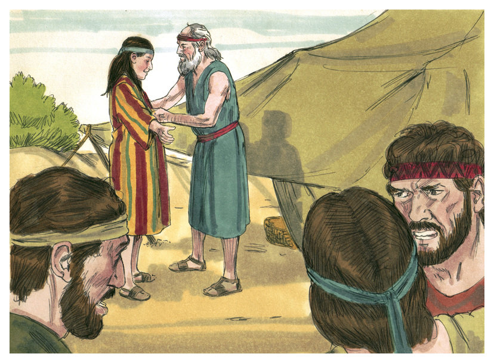
Yusuf adalah anak laki-laki ke-11 yang dilahirkan oleh Rahel dan Yakub. Pada saat itu anak-anak Yakub tidak berbahagia dengan keberadaan Yusuf, adik meraka yang paling kecil, karena dia anak kesayangan bapaknya.
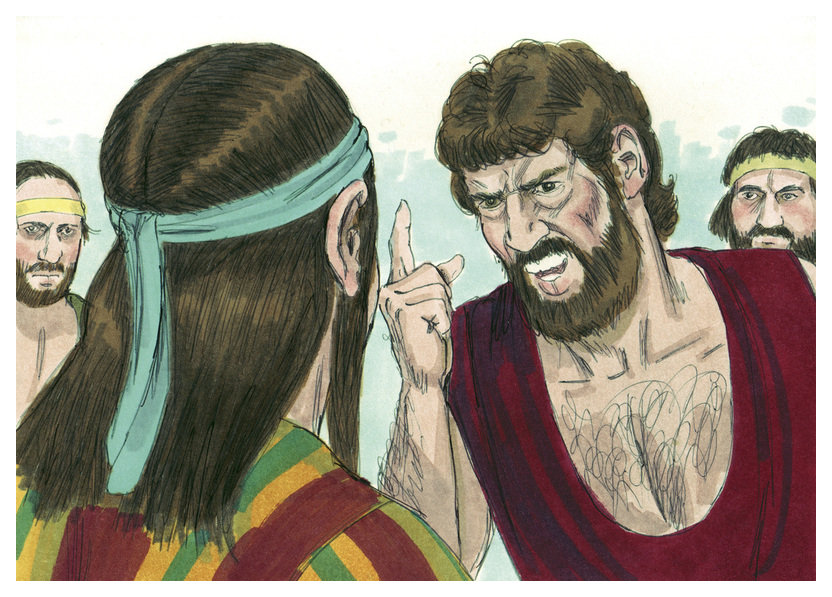
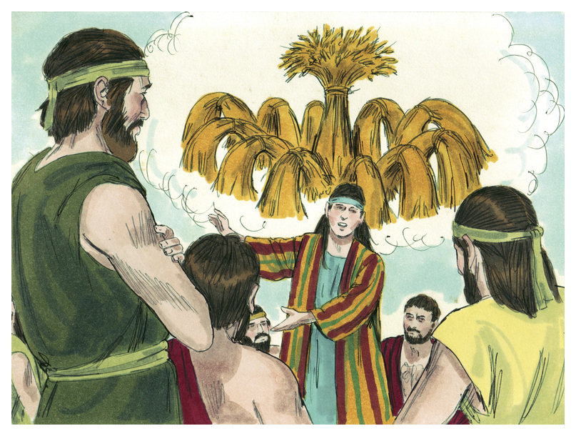
Kakak-kakak Yusuf semakin marah ketika ia menceritakan mimpi-mimpinya."Ikat kumpulan gandum ku makin tinggi dan kakak-kakakku akan tunduk menghormatiku" kata Yusuf. Mimpi ini mengartikan kalau nanti Yusuf menjadi orang penting melebihi kakak-kakaknya.
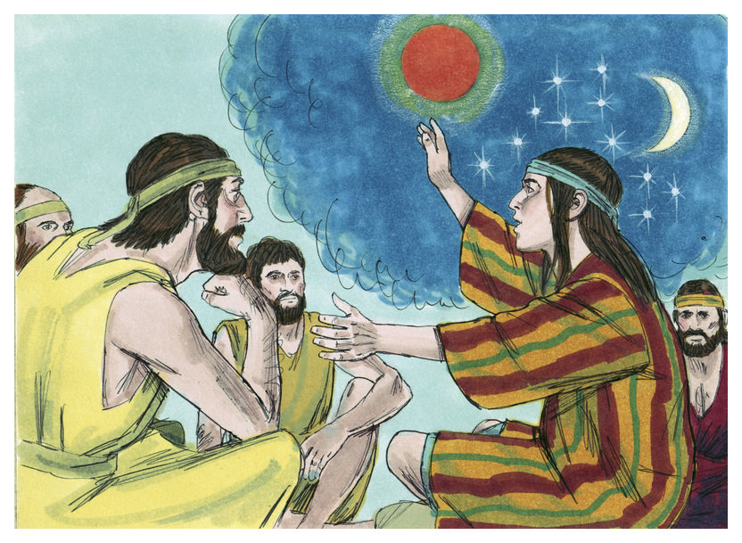
Dalam mimpi kedua Yusuf, matahari, bulan dan bintang tunduk kepadanya.
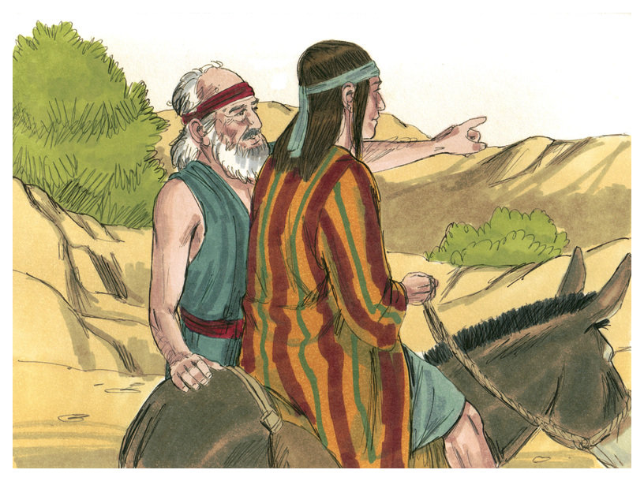
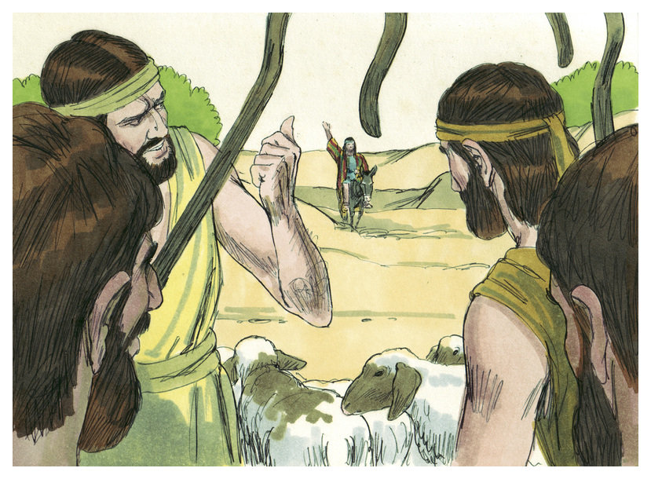
Suatu hari Yakub mengutus Yusuf ke padang rumput dimana kakak-kakaknya sedang menggembala hewannya. saat itu mereka saling berbisik "Mari kita bunuh pemimpi ini" Yusuf tidak sadar bahaya yang akan dihadapinya.
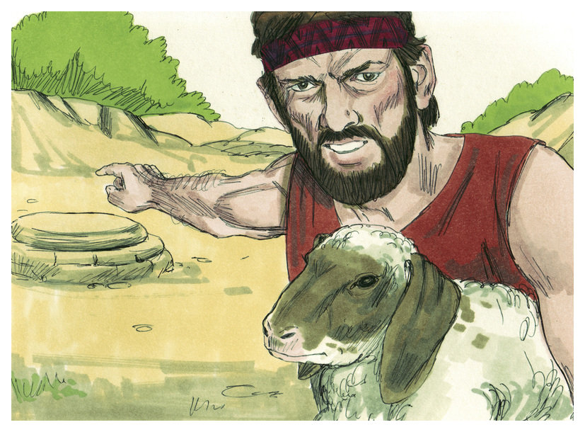
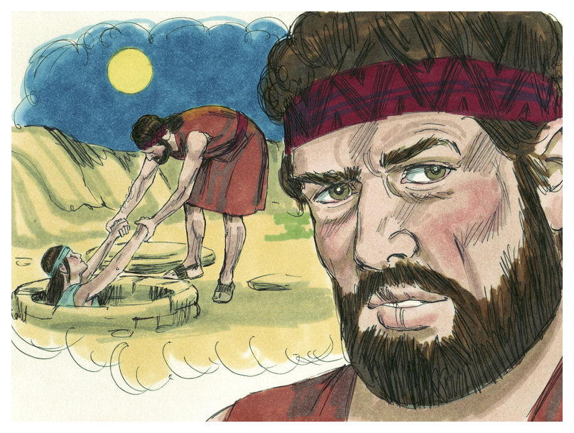
Ruben, kakak tertua tidak setuju. "Kita jangan tumpahkan darah" katanya. "Lihat ada lubang. Biarlah ia mati disana" Ruben merencanakan akan menyelamatkan Yusuf pada malam hari.
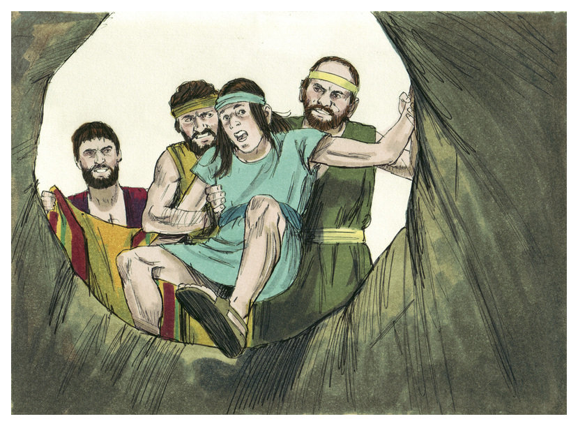
Ketika Yusuf tiba, kakak-kakaknya menangkapnya serta melepaskan jubah berwarna yang khusus dibuat Yakub untuk anak kesayangannya. Kemudian melemparkan dia ke dalam lubang.
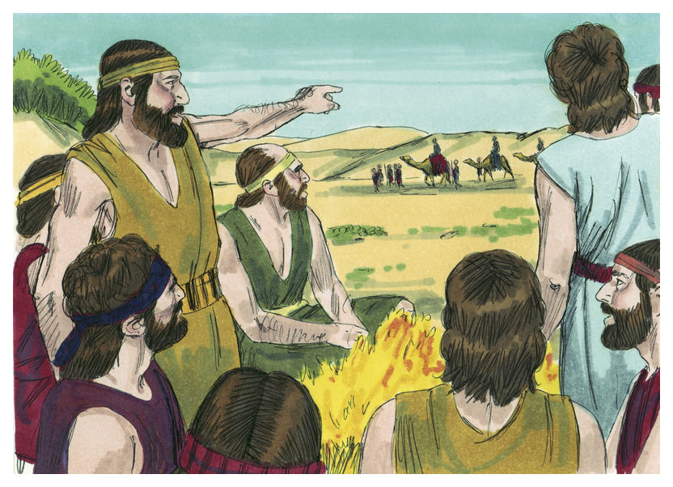
Ketika Ruben tidak ada, rombongan pedagang menunggang unta melintasi mereka menuju ke Mesir. "Mari kita jual Yusuf" teriak Judah, kakaknya. Lalu pada saat itu juga Yusuf dijual seharga dua puluh keping perak.
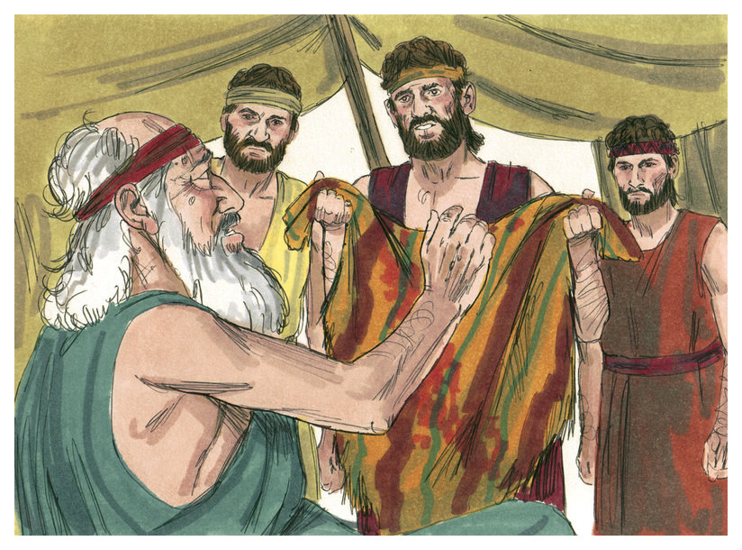
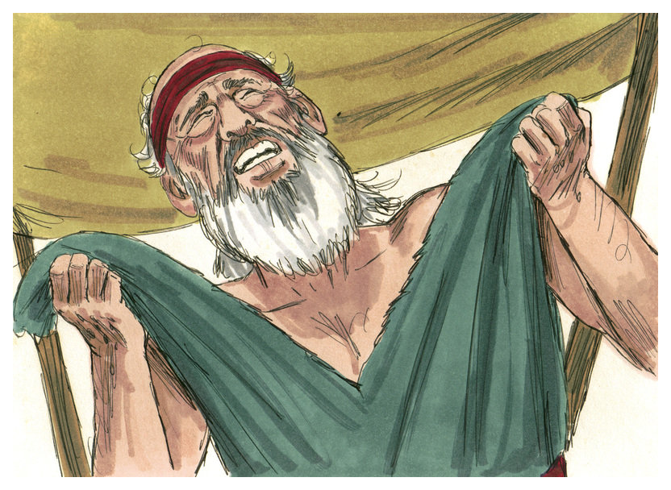
"Apakah ini jubah Yusuf? Penuh dengan darah. Kami menemukannya di padang pasir." Kakak-kakaknya yang jahat meyakinkan Yakub bahwa binatang buas yang membunuh anak kesayangannya. Lalu Yakub merobek jubahnya dan berduka cita. Tidak ada yang dapat menghiburnya.
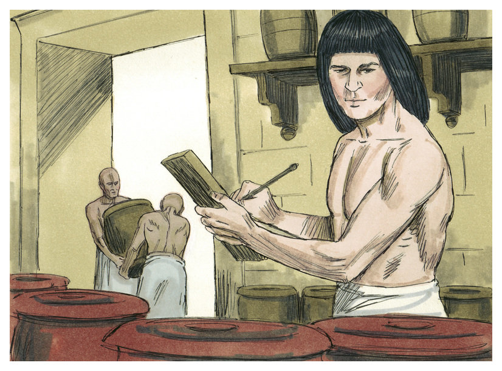
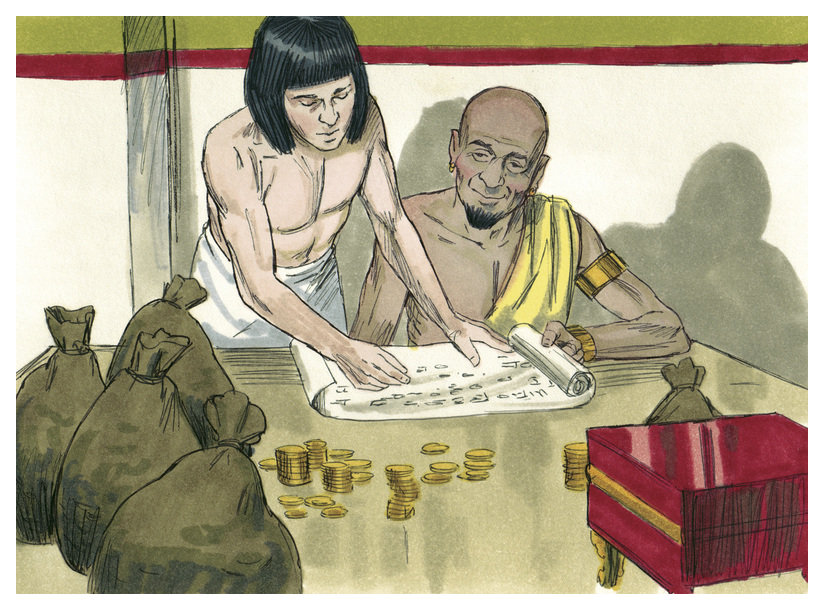
Di Mesir Yusuf merindukan rumahnya, tetapi ia tidak dapat melarikan diri. Ia menjadi budak di rumah Potiphar, orang penting di Mesir. Potiphar memperhatikan Yusuf adalah pekerja keras dan dapat dipercaya.
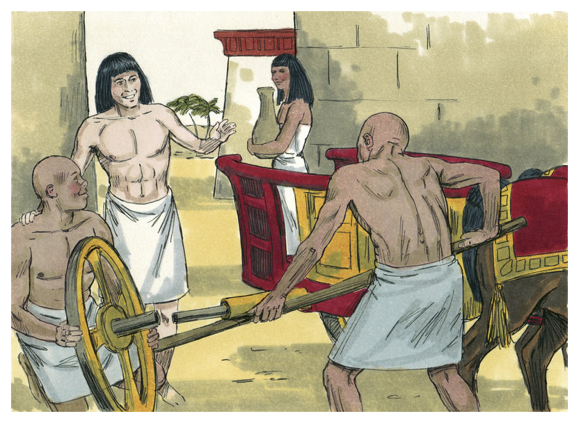
Suatu saat Potiphar mengangkat Yusuf menjadi kepala pelayan, bertanggung jawab untuk seluruh pekerjaan dan kepala dari sekuruh pelayan yang lain. Allah memberikan banyak berkat kepada Potiphar karena Yusuf. Walaupun Yusuf menjadi orang penting, Yusuf masih percaya dan melayani Allah dengan setia. Tetapi kesusahan datang juga ke Yusuf.
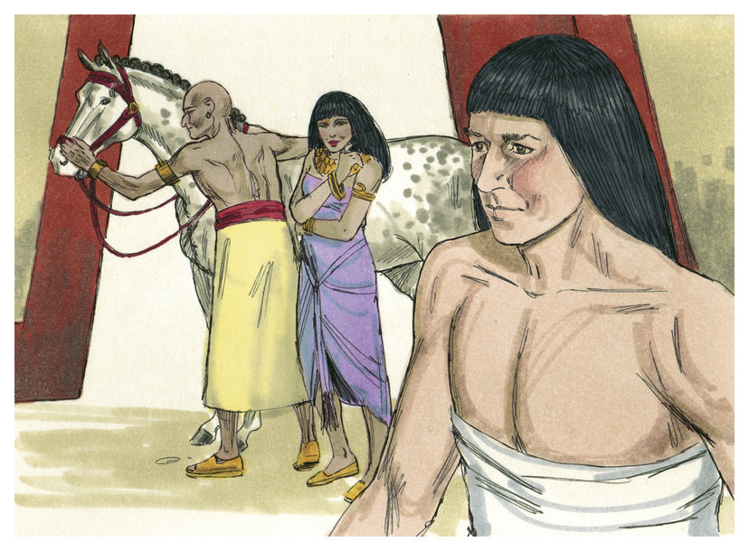
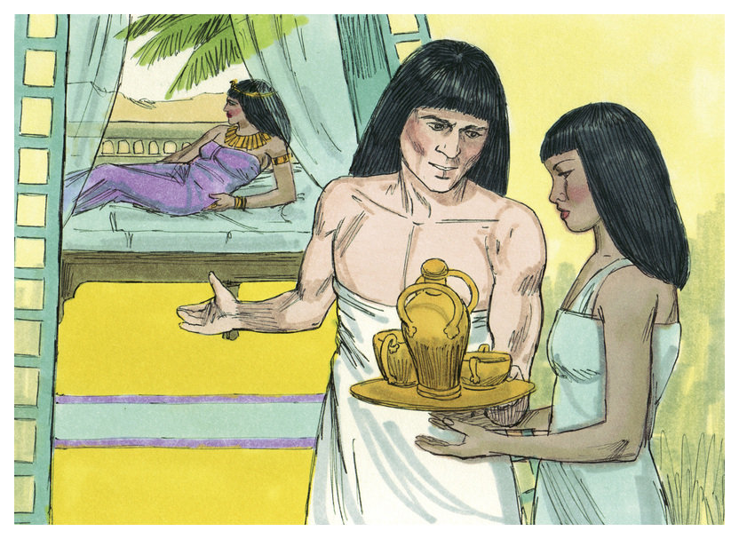
Istri Potiphar adalah perempuan yang jahat. Ia minta Yusuf untuk mengambil kedudukan suaminya. Tetapi Yusuf menolaknya. Ia tidak ingin berdosa dengan berbuat salah terhadap Potiphar.
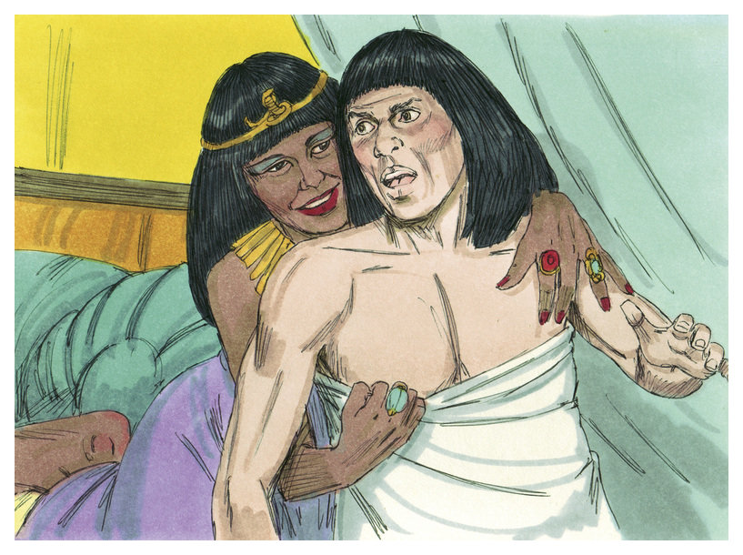
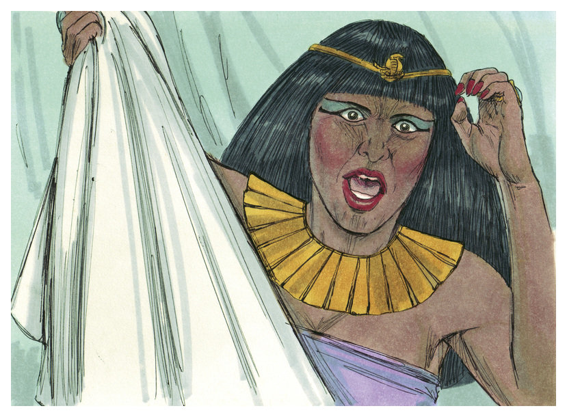
Ketika perempuan itu berusaha memaksanya, Yusuf lari. Tetapi perempuan itu menarik jubahnya.
 "Budak mu menyerangku" Istri Potiphar mengeluh. "Lihat, ini jubahnya!" Potiphar sangat marah. Ia harus berbuat sesuatu kepada Yusuf.
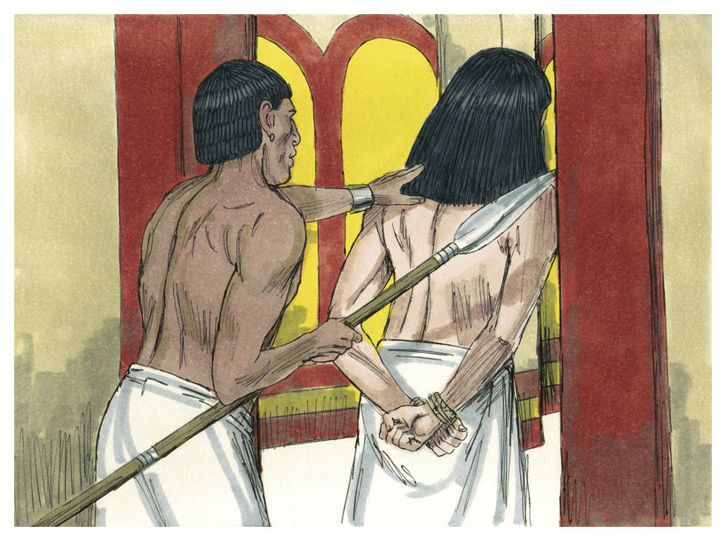
Potiphar memasukan Yusuf kedalam penjara. Walaupun ia tidak bersalah, Yusuf tidak kecewa maupun marah. Ia percaya Allah akan berkati dia sekalipun dalam penjara.
"Budak mu menyerangku" Istri Potiphar mengeluh. "Lihat, ini jubahnya!" Potiphar sangat marah. Ia harus berbuat sesuatu kepada Yusuf.
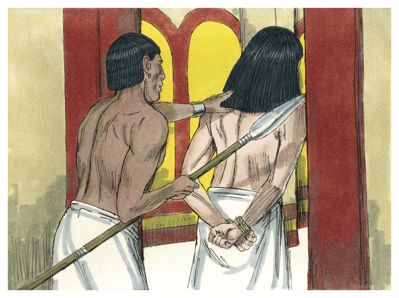
Potiphar memasukan Yusuf kedalam penjara. Walaupun ia tidak bersalah, Yusuf tidak kecewa maupun marah. Ia percaya Allah akan berkati dia sekalipun dalam penjara.
Kembali